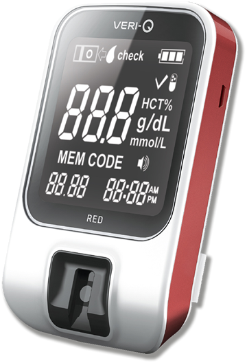

ANALIZADOR DE HEMOGLOBINA TOTAL EN SANGRE VERI Q RED
Test de hemoglobina

CARACTERÍSTICAS:
Rango de medición 5-25 g/dL.
Medición de tiempo 5 segundos.
Volumen de muestra 7 µl.
Precisión (%), diferencia 5-10 g/dL dif. 0.3 mg/dL.
10-25 g/dL CV 3%.
Cálculo de hematocrito (HCT %).
Registro: 0242R2016 SSA
DATOS COMPLEMENTARIOS: Para mayor información comunicarse a:
FORE CARE MÉDICAL, S.A. DE C.V.
Tels.: (55) 5568-8240, 5568-8061
e-mail: info@forecaremedical.com
atencionclientes@forecaremedical.com
ventasprivado@forecaremedical.com
ventasgobierno@forecaremedical.com
www.forecaremedical.com